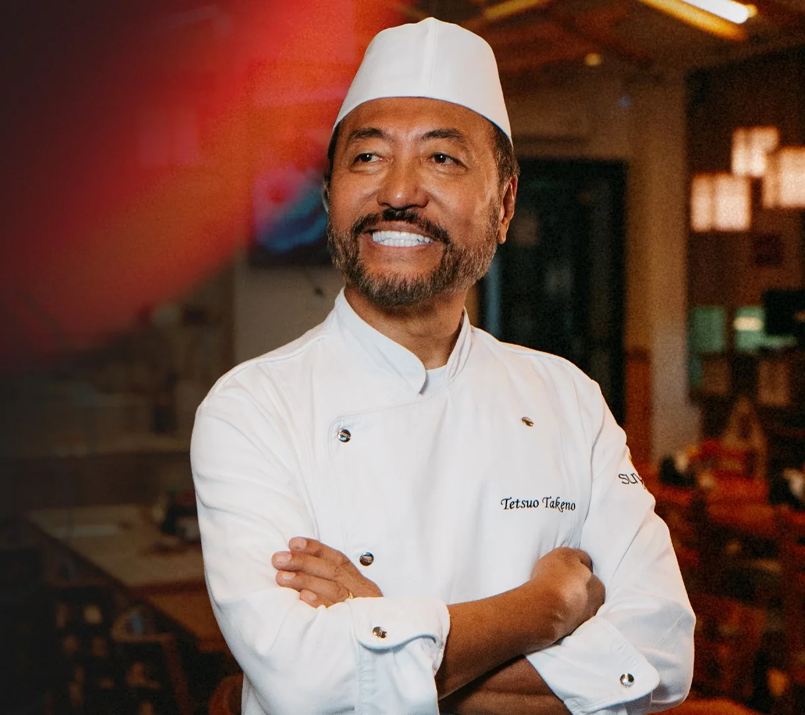
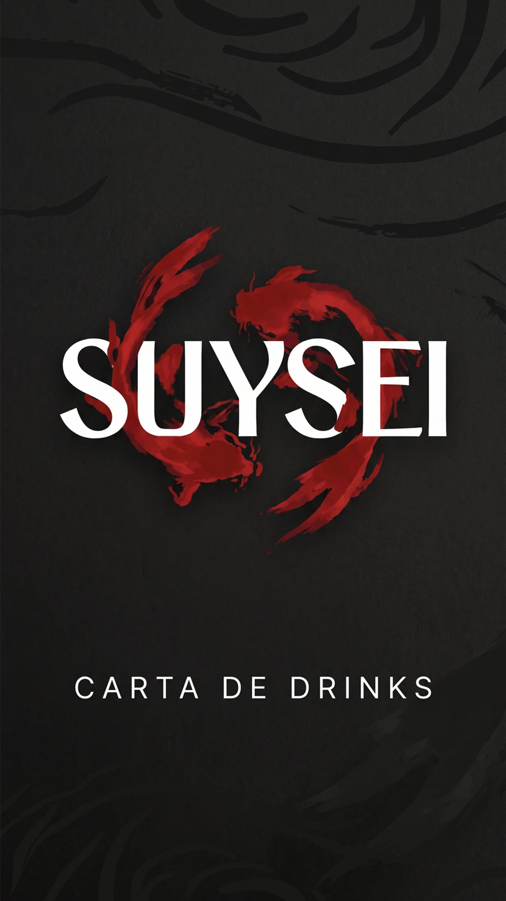

São Paulo
Tudo começa longe de um restaurante: numa feira, com um casal que cozinha em casa. É comida brasileira, feita com as próprias mãos, para a própria família.
A força que cruza o universo.
A perseverança que vence as correntezas.

Há histórias que parecem ter sido escritas muito antes de acontecerem.
A de Suysei começa numa feira, em São Paulo, em 1974, muito antes de existir um restaurante, uma placa dourada ou um cardápio. Começa com duas mãos que cozinhavam em casa, e que aos poucos, prato a prato, foram transformando um hábito familiar em um destino.
O nome que herdamos dessa história (Suysei, cometa) não é um adorno. É uma declaração. Um cometa não pede licença para atravessar o céu: ele cruza o escuro com uma trajetória própria, e onde pousa, deixa luz. Foi assim que uma família saiu do Japão e chegou ao Brasil: sem mapa pronto, mas com a certeza de que valia a pena percorrer a distância.
E toda travessia difícil exige a mesma coragem de outra criatura sagrada da cultura japonesa: a carpa que nada contra a correnteza, sobe a cachoeira mais alta e, só então, se torna dragão. Suysei é o encontro dessas duas forças (o cometa que atravessa e a carpa que resiste) reunidas numa única marca, num único traço.
Este guia não existe para engessar essa história. Existe para que ela nunca se perca, em cada aplicação, em cada peça, em cada prato que sai da cozinha.

Toda marca forte carrega uma origem que a justifica. A da Suysei não nasceu de uma estratégia de mercado, mas de uma travessia real: a de uma família que atravessou o mundo e, aos poucos, transformou um hábito de casa em um legado.
Tudo começa longe de um restaurante: numa feira, com um casal que cozinha em casa. É comida brasileira, feita com as próprias mãos, para a própria família.

A cozinha da família encontra suas raízes: a culinária japonesa, feita com a disciplina e o cuidado de quem a aprendeu em casa.

Para popularizar o sushi, a mãe cria o hábito do “take away” — comida japonesa que sai de casa para chegar a mais gente. A procura cresce, e o que era um hábito familiar vira um negócio: nasce o Suysei.

O pai escolhe o nome. Suysei significa cometa — uma homenagem à própria travessia da família, que veio do Japão ao Brasil com a força de um cometa: direção, luz e determinação.

O pescado é o carro-chefe da casa, servido em ampla variedade. A cozinha não busca ser contemporânea ou “gourmet” — busca ser original, feita por um japonês de verdade, com história e raízes na tradição.
A força que cruza o universo.
A perseverança que vence as correntezas.
O nome Suysei carrega a força e a luz de um cometa, e essa não é uma escolha decorativa, é a metáfora exata da história desta família. Ao deixar o Japão, eles iniciaram uma travessia que rompeu fronteiras, cruzando o mundo como um cometa que atravessa o céu escuro em busca de um novo destino.
Mas chegar a um novo mundo exige coragem. E é aqui que o cometa Suysei se funde a um dos símbolos mais sagrados da cultura japonesa: a lenda da carpa dourada. Conta a lenda que apenas as carpas mais destemidas conseguem nadar contra as correntezas mais fortes — e a que sobe a mais alta cachoeira se transforma em um imponente e celestial dragão.
Por isso, o coração da marca é formado por duas carpas em movimento contínuo, cujas formas fluidas desenham, juntas, a cauda luminosa do próprio cometa.
Representa a essência do cometa, o núcleo de onde tudo se originou. Volta-se para baixo não como recuo, mas como lembrete eterno de honra e gratidão. Ancora o sucesso no respeito aos antepassados, às origens deixadas no Japão e à família — lembrando que a árvore só cresce forte em direção ao céu porque tem raízes profundas na terra.
Representa o calor e a força do cometa: o trabalho duro, as dificuldades vencidas no Brasil, a coragem de nunca desistir. É a carpa subindo a cachoeira em direção ao sucesso absoluto, prestes a se transformar em dragão. Ela diz que todo o esforço valeu a pena, e que o futuro é de vitórias.
O Suysei é isso: energia vital de um cometa que encontrou seu lugar e a persistência de carpas que viraram dragões. Cada prato servido, cada sorriso no atendimento e cada detalhe deste espaço carrega essa poeira de estrelas e essa herança de superação.
A Suysei possui quatro construções de logotipo, pensadas para situações diferentes de espaço, suporte e leitura. Todas compartilham os mesmos três elementos — símbolo, wordmark e assinatura bilíngue — apenas reorganizados. E todas existem em duas cores de fundo: positiva e negativa.
Passe o mouse (ou toque) para ver o que não fazer.
✓Aplicar o logotipo em cor sólida e chapada, exatamente como no arquivo oficial.
✕Adicionar sombra, contorno, brilho, gradiente ou qualquer efeito de profundidade ao símbolo ou ao wordmark.
✓Usar apenas as cores da paleta oficial (vermelho Suysei, preto, off-white, dourado).
✕Recolorir o logotipo com cores fora da paleta, incluindo tons “aproximados” feitos no olho.
✓Usar a versão positiva (preta/vermelha) sobre fundos claros e a negativa (branca) sobre fundos escuros.
✕Aplicar a versão positiva sobre fundo escuro (ou a negativa sobre fundo claro), perdendo contraste e legibilidade.
✓Manter as proporções originais, redimensionando sempre a partir dos cantos (proporção travada).
✕Esticar, achatar, inclinar ou distorcer o símbolo e o wordmark para “encaixar” num espaço.
Quatro cores, nenhuma aproximação. Clique em uma cor para copiar o código.
A marca não busca ser contemporânea por moda, busca ser atemporal por história. É a união entre a força imparável de um cometa e a estabilidade de uma mesa farta em família. Não há pressa em ser a última tendência; há orgulho em ser a mesma verdade, servida geração após geração.
A comunicação da Suysei fala como Tetsuo fala do próprio negócio: com simplicidade, orgulho e sem exageros. Frases diretas, curtas, que soam como quem domina o ofício e não precisa provar nada; porque a tradição já fala por si.
Culinária “de verdade”, feita por mãos japonesas. O design foge de acabamentos industriais em favor de traços manuais e da estética sumi-ê. Nada aqui finge ser o que não é.
Inspirada na disciplina do manuseio do pescado, a marca usa espaço negativo e alto contraste, sem meios-tons, com a mesma clareza e sobriedade que Tetsuo mantém à frente da casa.
O rigor da técnica convive com o calor do ambiente. Traços feitos à mão evocam o cuidado de quem coloca a mão na massa para servir encontros entre gerações.
A sazonalidade e a variedade dos peixes são tratadas com a mesma reverência da caligrafia artesanal que compõe o universo da marca.
As peças da marca recriadas em 3D. Arraste para girar, clique no objeto para interagir.
Clique na caixa para abrir a tampa
24 aplicações, da fachada ao vale-presente. Filtre por categoria e clique em uma imagem para ampliar.





Projeto desenvolvido por